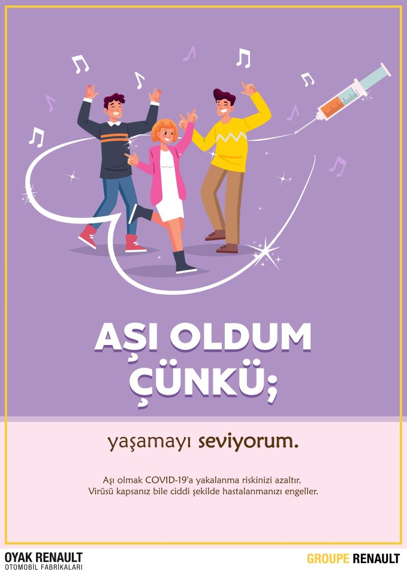

COVID-19 AŞI ÇEŞİTLERİ
COVID-19 için birkaç farklı aşı türü geliştirilmektedir.
Bu aşıların tümü vücudun bağışıklık sistemine COVID-19’a neden olan virüsü güvenli bir şekilde tanıtmayı ve yok etmeyi öğretecek şekilde tasarlanmıştır.
- Hastalığa neden olmayan ancak bağışıklık yanıtı oluşturan etkisizleştirilmiş virüs içeren aşılar (İnaktif aşılar).
- Hastalığa neden olmayan ancak bağışıklık yanıtı oluşturan zayıflatılmış virüs içeren aşılar (Canlı atenüe aşılar).
- Güvenli bir şekilde bağışıklık yanıtı oluşturmak için COVID-19 virüsünün yapısını taklit eden protein parçalarını kullanan protein bazlı aşılar.
- Güvenli bağışıklık yanıtı oluşturmak için COVID-19 virüsünün RNA parçacıklarını taşıyan hastalık yapıcı etkisi olmayan virüslerin kullanıldığı viral vektör aşıları.
- Kendi başına güvenli bağışıklık yanıtı oluşturan protein üretmek için genetik olarak tasarlanmış RNA ve DNA parçacıklarını kullanan son teknoloji bir yaklaşım olan m-RNA ve DNA aşıları.
COVID-19 Aşısı Üretim Teknolojileri
Erken dönemde faz III çalışmalarına başlamış beş aşı, üç farklı yöntemle üretilmektedir.
Bu yöntemler:
- İnaktif Aşılar
- Gelenekselleşmiş yöntemlerle üretilir.
- Virüs parçalanıp etkisiz hale getirilerek vücudumuza zarar verilmeden bağışıklığımız uyarılır.
- Uzun dönem etkileri konusunda diğer aşılara kıyasla daha net konuşulabilir.
- Öldürülmüş virüs ihtiva etmelerinden dolayı ilk aşamada daha güvenli olduğu kabul edilir.
- 2-8°C’de saklanabilir.
- Üretimi diğerlerine göre daha zor ve yavaştır.
- Türkiye’de yapılan faz III çalışmasının ara değerlendirme sonuçlarına göre aşının etkinliği %91,25 olarak tespit edilmiştir.
- Sinovac aşısı bu sınıfa girmektedir.
- 2.Viral Vektör (Adenovirüs) Aşıları
- Grip benzeri hastalık yapan bir virüsün (adenovirüs) genetik müdahale sonrası Koronavirüs proteini ile desteklenerek insanda bağışıklık oluşturması amaçlanır.
- Bu aşılar; Zika, Chikungunya gibi viral hastalıklara karşı uzun bir süredir faz III aşamasındaydı.
- Aşıların içindeki mikroorganizmalar canlı olmakla birlikte, güçsüzleştirildiklerinden dolayı insanlarda hastalık yapamazlar.
- Avantajı 2-8°C arasında, yani rutin olarak kullanılan aşı dolaplarında saklanabilmeleridir.
- Yeni aşı geliştirme teknolojilerindendir.
- Sputnik-V ve Oxford/AstraZeneca aşıları (AZA-1222) bu sınıfa girmektedir.
- 3.Mesajcı RNA (mRNA) Aşıları
- mRNA, vücudumuzda doğal olarak üretilen protein sentezinde rol alır.
- Laboratuvarda yapay olarak üretilen mRNA’lar tıpkı kendi mRNA’larımız gibi çalışarak virüse karşı bizi uyarmayı amaçlamaktadır.
- Bu moleküller daha sonra kendi moleküllerimiz gibi yıkılarak vücuttan atılırlar.
- Bu aşılar 25 yıldır kanser dâhil pek çok hastalığın tedavisine yönelik olarak kişiye özel immunoterapi yöntemleriyle çalışılan teknolojiye benzer şekilde üretilen aşılardır.
- Bu aşıların en büyük dezavantajı Biontech/Pfizer aşısının (BNT-162b2) -70°C’de, Moderna aşısının (mRNA-1273) -20°C’de saklanabiliyor olmasıdır.
- Biontech/Pfizer, Moderna aşıları bu sınıfa girmektedir.
* Ülkemizde halen 16 aşıya ilişkin çalışma yürütülmektedir.
Covid19 mRNA Aşısı Nasıl Çalışır?
COVID-19 Aşısı Sonrası Yan Etkiler
Bugüne kadar COVID-19 aşılarına yönelik gerek yürütülen klinik çalışmalarda gerekse mevcut aşı uygulamalarında ciddi yan etkilere rastlanmamıştır. Aşılama sonrasında görülen yan etkiler sıklıkla hafiftir.
Bunlar; yorgunluk, baş ağrısı, ateş, titreme, kas/eklem ağrısı, kusma, ishal, aşı uygulanan bölgede ağrı, kızarıklık, şişlik gibi hafif yan etkilerdir. Ancak nadir de olsa alerjik reaksiyonların olabileceği göz ardı edilmeden aşı uygulamasından sonra bir rahatsızlık hissedilmesi durumunda en yakın sağlık kuruluşuna başvurulması ve hekime yakın zamanda aşı olunduğu bilgisinin iletilmesi unutulmamalıdır.
Yan Etkilerle Karşılaşıldığında Yapılacaklar
Aşı sonrasında sık olarak karşılaşılabilecek durumlar ve bu hafif durumlara yönelik destekleyici yaklaşımlar şunlardır:
- Aşı uygulanan bölgede ağrı/şişlik/kızarıklık
Aşı uygulanan kolunuza yüksekte olacak şekilde pozisyon veriniz. Soğuk uygulama yapınız. (Örnek: Soğuk suyla ıslatılmış bir havlunun aşı yapılan bölgeye uygulanması vb. Bu sırada cilde doğrudan buz temas ettirilmesinden kaçınılmalıdır.)
Parasetamol içeren ağrı kesiciler kullanılabilir.
- Yorgunluk
İstirahat ediniz, yeterli sıvı aldığınızdan emin olunuz.
- Hafif ateş, titreme
İstirahat ediniz, yeterli sıvı aldığınızdan emin olunuz, parasetamol içeren ağrı kesiciler kullanabilirsiniz.
- Baş ağrısı
Parasetamol içeren ağrı kesiciler kullanabilirsiniz.
- Kas/eklem ağrısı
İstirahat ediniz, yeterli sıvı aldığınızdan emin olunuz, parasetamol içeren ağrı kesiciler kullanabilirsiniz.
- Kusma, ishal
Bol sıvı takviyesi yapabilirsiniz, beslenmenizi ishal diyetine uygun olarak düzenleyebilirsiniz. Ağızdan sıvı ve gıda alınamayacak kadar kusma olması durumunda sıvı kaybı olabileceğinden sağlık kuruluşuna başvurunuz.
COVID-19 aşısı uygulamasından sonra bunların dışında aşıyla ilişkili olabileceği düşünülen bir rahatsızlık hissedilmesi durumunda en yakın sağlık kuruluşuna başvurulmalıdır.
Covid19 Sık Sorulan Sorular
1) Covid19 geçirdim gene de aşı olmalıyım?
COVID-19 geçirmiş kişilerde koruyuculuk bir müddet daha devam etmektedir. COVID-19 geçirmiş sağlık çalışanlarına, virüse maruz kalma oranı en yüksek grup oldukları için hastalığı geçirdikten 1 ay sonra; COVID-19 geçirmiş diğer risk gruplarına ise hastalığı geçirdikten 6 ay sonra aşı uygulanabilecektir
2) İnaktif covid19 aşısı ve COVID-19 mRNA aşısı emziren kadınlara uygulanabilir mi?
Emzirme döneminde inaktif COVID-19 aşısının uygulanmasına ilişkin veri bulunmamaktadır. COVID-19’u ağır geçirme riski yüksek olan emziren kadınlara kendi istekleri halinde aşı uygulanabilir.
3) İnaktif covid19 aşısı ve COVID-19 mRNA aşısı olduktan sonra hastalığa karşı ne kadar süre korunacağım?
Klinik çalışmalarda, inaktif COVID-19 aşılarının hastalığa karşı koruyucu etkisinin yüksek olduğu gösterilmiştir. COVID-19 aşılarının koruyuculuk süresi henüz bilinmemektedir, bunun için ek araştırmalara ihtiyaç bulunmaktadır.
4) İnaktif covid19 aşısı ve COVID-19 mRNA aşısı kaç doz uygulanacak?
18 ve üstü yaştaki kişilere dört hafta ara ile birer doz olmak üzere toplam iki doz olarak uygulanacaktır.
5) Aşı yaptırdıktan sonra maske, mesafe ve temizlik kurallarına uymaya devam edecek miyim?
Aşı uygulandıktan sonra hastalığa karşı koruyuculuğun gelişmesi genellikle birkaç hafta alır. Bununla birlikte herkeste aynı düzeyde koruyuculuk gelişmeyebilir. Ayrıca aşılanan kişi kendisi korunuyor olsa bile virüsü aldıysa başkasına bulaştırabilir. Bu nedenle aşı uygulandıktan sonra da maske, mesafe ve temizlik kurallarına uyulması gerekmektedir. Bakanlığımız tarafından artık önlemlere gerek olmadığı açıklanana kadar bu önlemlerin alınmasına devam edilmelidir.
6) Çocuklara da covid19 aşısı yapılacak mı?
T.C. Sağlık Bakanlığı Koronavirüs Bilim Kurulu tarafından belirlenmiş öncelikli risk grubunda 18 yaş altındaki kişiler yer almadığından şu an için çocuklara COVID-19 aşısı uygulanmayacaktır.
7) Türkiye’de covid19 aşı çalışmaları yapılıyor mu?
Ülkemizde de COVID-19’a karşı aşı çalışmaları yapılmaktadır. Bu aşılara ilişkin faz aşamalarının başarıyla tamamlanmasının ardından aşı üretimine geçilmesi planlanmaktadır.
8) Aşı yaptırmak zorunlu olacak mı?
Türkiye’de çocukluk aşıları dâhil, aşı uygulaması zorunlu değildir. Bununla birlikte aşı, hastalıklardan korunmak için en etkili yöntemlerden biridir. Aşı sayesinde yeryüzünden silinmiş pek çok hastalık mevcuttur. Bu nedenle T.C. Sağlık Bakanlığı tarafından aşıyla ilgili toplumu bilinçlendirme çalışmaları yürütülmektedir. Aşı olmak, kişinin topluma karşı sorumluluğudur.
9) İnaktif covid19 aşısı ve COVID-19 mRNA aşısı gebelere uygulanabilir mi?
Gebelikte inaktif COVID-19 aşısının uygulanmasına ilişkin veri bulunmamaktadır. COVID-19’u ağır geçirme riski yüksek olan gebelere kendi istekleri halinde aşı uygulanabilir. Aşının gebeliğin ilk üç ayında uygulanmaması tercih edilir.
10) Covid19 aşıları nasıl bu kadar hızlı geliştirildi?
COVID-19 aşıları, bilim tarihinde 2009 pandemik domuz gribi aşılarından sonra bu kadar hızlı hazırlanan ilk aşıdır. Virüs ailesinin tanınıyor olması, Koronavirüslerin biyolojisinin ve nasıl davrandığının bilinmesi, bilim tarihinde belirli bir yol katedilmesi, bilgiye erişimin kolaylaşması, moleküler genetik bilimindeki ilerlemeler, kullanılan cihaz teknolojisi ve metotların yıldan yıla gelişme göstermesi, bilim insanları arasında elde edilen bilginin hızla koşulsuz olarak paylaşılması, klinik çalışmalarda hızlı yol alınması ve acil çözüm bulma çabası aşı üretim sürecini hızlandırdı. COVID-19 aşıları da diğer aşı ve ilaçlarda olduğu gibi kalite, güvenlilik ve etkinlik konusundaki yasal gereklilikler izlenerek geliştirilmektedir.
11) Covid19 aşıları güvenli midir?
Hiçbir aşı, faz çalışmaları yapılmadan, bu çalışmaların sonuçları ilgili mercilerle şeffaf bir şekilde paylaşılmadan onay alamaz, piyasaya sürülemez. Aşı çalışması yapan kuruluş, geliştirme ve üretim sürecinde uluslararası kalite standartlarına uymak zorundadır. Bu standartlar İyi Laboratuvar Uygulamaları (GLP-Good Laboratory Practices), İyi Klinik Uygulamaları (GCP-Good Clinical Practices) ve İyi Üretim Uygulamaları’dır (GMP-Good Manufacturing Practices).
Ayrıca faz çalışmaları sırasında aşıyla ilişkili olduğu düşünülen ve insan sağlığını belirgin ölçüde olumsuz etkileyen bir durum saptandığında çalışmalar durdurulmaktadır. Yalnızca sorunun aşı ile ilişkili olmadığından emin olunması durumunda çalışmalar sürdürülmekte, aşılama yapılıyor ise kaldığı yerden devam ettirilmektedir. Bu çerçevede ülkemizde uygulanmaya başlanan COVID-19 aşılarının faz çalışmalarında çalışmanın durmasına sebebiyet verecek bir yan etki ile karşılaşılmamıştır. Uygulama aşamasında da güvenliği konusunda herhangi bir tereddüt bulunmamaktadır.
12) Covid19 aşıları dışındaki aşılar Covid19’dan korumaya yardımcı olur mu?
COVID-19 aşıları dışında yer alan grip, zatürre, kızamık-kızamıkçık-kabakulak (KKK), verem (BCG) vb. aşıların COVID-19’a karşı koruduğuna dair kanıtlanmış bir bilgi yoktur.
13) Grip ve/veya Zatürre aşısını yeni yaptırdım? Covid19 aşısı olabilir miyim?
Grip ve/veya zatürre aşısı olduktan en az 2 hafta sonra inaktif COVID-19 aşısı olabilirsiniz.
14) Covid19’u geçirmek covid19 aşısı olmaya göre daha uzun süre korur mu?
Kişinin bir hastalığı geçirerek kazandığı bağışıklık (doğal bağışıklık) düzeyi, geçirilen hastalığa ve kişiye göre değişir. COVID-19 etkeni SARS-CoV-2 yeni bir virüs olduğu için hastalığı geçirmekle kazanılan doğal bağışıklığın ne kadar süre koruyacağı bilinmemektedir. Ancak yürütülen bazı çalışmalar COVID-19’a karşı gelişen doğal bağışıklığın uzun süreli olmadığını göstermektedir.
15) İnaktif Covid19 aşısında domuz içeriği var mıdır?
İnaktif COVID-19 aşısında domuz içeriği bulunmamaktadır.
16) İnaktif Covid19 ve COVID-19 mRNA aşısı aşısının uygulanmaması gereken durumlar hangisidir?
Aşının içeriğinde bulunan herhangi bir maddeye karşı alerji/anafilaksi öyküsü bulunması durumunda aşı uygulanması önerilmemektedir.
Daha önce yaşanan belirgin bir alerjik reaksiyon varsa aşı uygulamasından önce bu durum sağlık personeline belirtilmelidir.
Diğer tüm aşılarda da olduğu gibi yüksek ateş (38ºC ve üzerinde), tablosu netleşmemiş hastalık ve kronik hastalıkların atakları sırasında aşının uygulanmasının bir süre ertelenmesi önerilmektedir.
17) Aşı olmadan önce alkol almıştım, aşı oldum. Aşı olduktan sonra alkol alabilir miyim?
Olası ASİE (Aşı Sonrası İstenmeyen Etki) izleminde değerlendirme açısından sıkıntı olacağı için alkol alınmaması önerilmektedir.
18) Aşımın ilk dozunu inaktif Covid19 aşısı ile oldum. İkinci dozunu mRNA aşısı olabilir miyim?
İlk dozunuz hangi COVID-19 aşısı ile yapılmışsa ikinci dozunuz da aynı COVID-19 aşısı ile yapılacaktır.